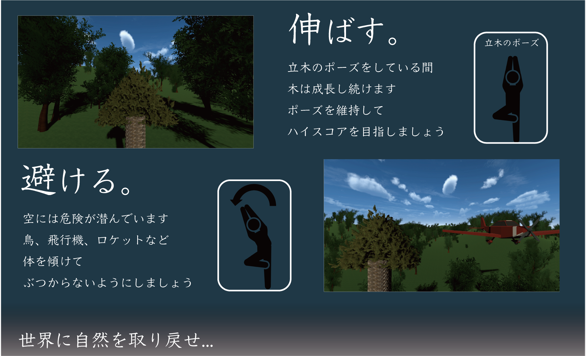

YOGA EARTH
扇子で空中にお絵描きするインタラクティブコンテンツ
東京ゲームショウ2024 出展

ゲーム, インタラクティブコンテンツ, 2D LiDAR, 透明スクリーン, 東京ゲームショウ
概要
プレイヤーは一本の木を育てる精霊となり、トランポリンの上でヨガの「立木のポーズ」を取りながら木を成長させます。 正しい立木のポーズを維持している間、木は上へ向かって成長します。さらに、プレイヤーが体を左右に傾けると、それに合わせて木も同じ方向へ伸びていきます。成長途中にはさまざまな障害物が出現するため、木の向きを調整しながら避ける必要があります。 限られた時間の中でどれだけ大きく木を育てられるかを競う、身体のバランス感覚と集中力が試されるインタラクティブゲームです。
カメラによる姿勢推定

東京ゲームショウ2024 への出展
作成したコンテンツは2024年9月26日~29日に東京ビッグサイトで開催された東京ゲームショウ2024にて展示を行いました。 東京ゲームショウ2024では、子どもから大人まで幅広い年齢層の来場者が本コンテンツを体験し、楽しんでいただきました。